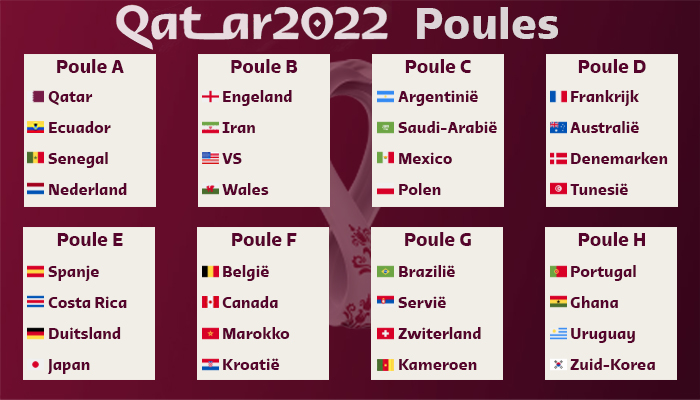

Er zijn acht poules, poule A tot en met H. Alle nummer 1 en 2 van de groepen gaan door naar de achtste finales van het WK voetbal 2022. Er zullen dus zestien landen door gaan naar de knock-out fase van het WK voetbal in Qatar.
De landen die uiteindelijk gekwalificeerd zijn voor de laatste 16 zijn:
| Land | continent | MVP (Most Valuable Player) |
|---|---|---|
| Nederland | Europa | Wout Weghorst |
| VS | Noord-Amerika | Christian Pulisic |
| Argetinie | Zuid-Amerika | Leonel Messi |
| Australie | Oceanië | Andrew Redmayne |
| Japan | Azië | Ritsu Doan |
| Kroatië | Europa | Luka Modric |
| Brazilie | Zuid-Amerika | Richarlison |
| Zuid-Korea | Azie | Son |
| Frankrijk | Europa | Kylian Mbappe |
| Polen | Europa | Wojciech Szczęsny |
| Engeland | Europa | Harry Kane |
| Senegal | Afrika | Ismaïla Sarr |
| Marokko | Afrika | Sofyan Amrabat |
| Spanje | Europa | Álvaro Morata |
| Portugal | Europa | Gonçalo Ramos |
| Zwitserland | Europa | Xherdan Shaqiri |